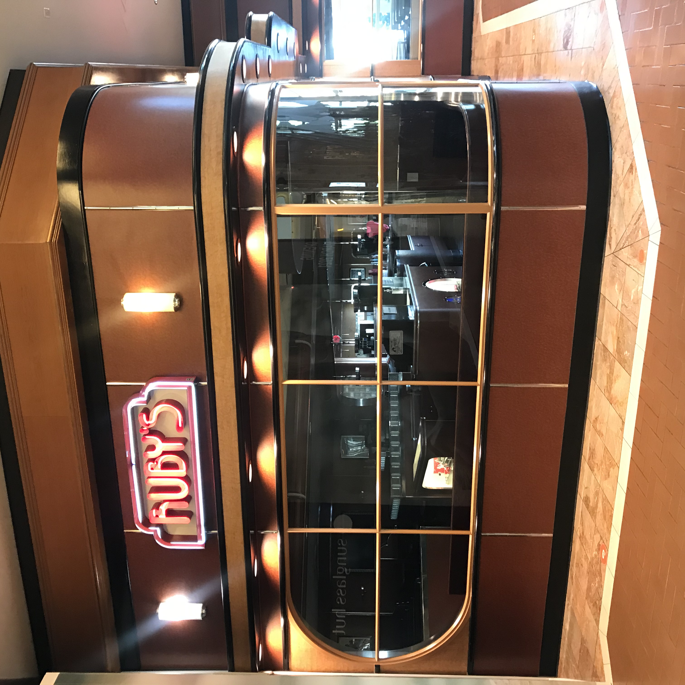
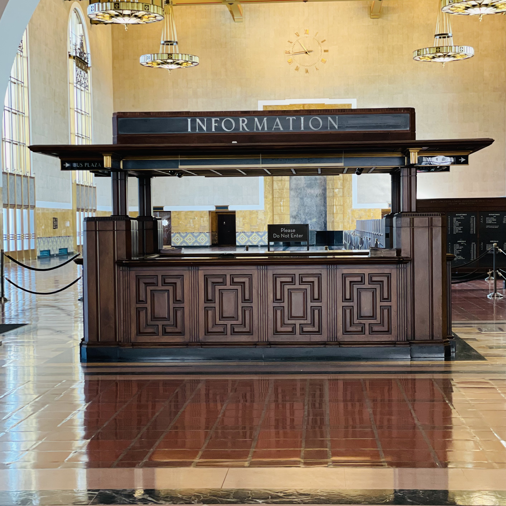
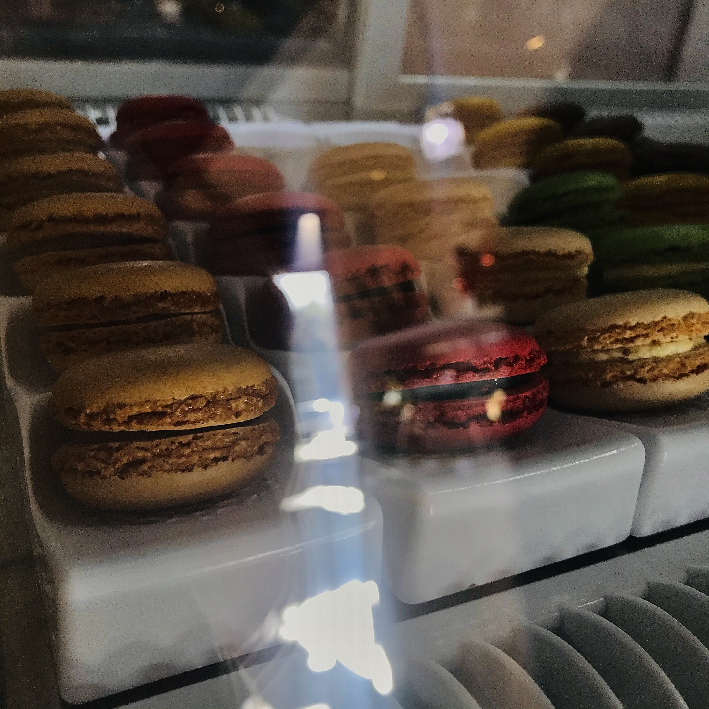
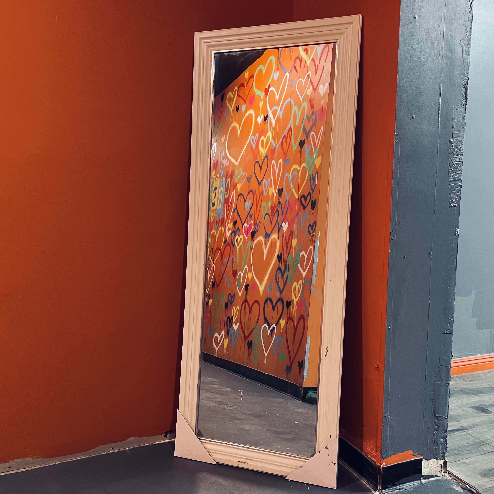

Purpose
The end goals are to experiment with the fancy CSS we learned in lecture.
Challenges
Working with decoration has got to be my favorite thing ever in CSS! It was so fun to experiment and I think it helps that these protocals are probably among the very few things that I feel like I have a comfortable amount of knowledhe about. There was one thing though, and I don't think it's a challenge because I like the way it turned out, but when I played around with object-fit, it did it did something to my images, stacked them on top of each other. Adding on the rotation transform and I think it turned out really good! It's probably not what it's supposed to do though.
Results
You're looking at it! XD



